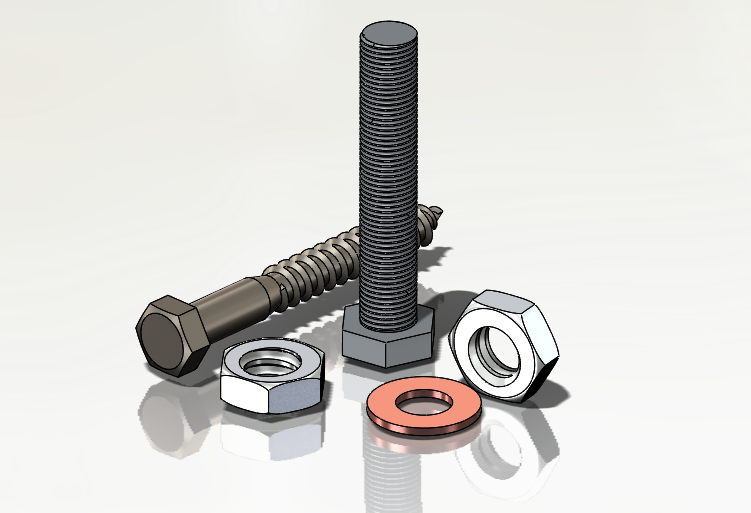

アセンブリには、ユーザーによって構成された推奨ハードウェアコンポーネントのリストが含まれている必要があります。
多くの組織では、異なるバージョンやシリーズを持つ類似製品を、コンポーネントの変更または置き換えによって生産しています。これは、市場の需要に基づいて、さまざまな機能を異なるコストで提供するために実施されています。
推奨ハードウェアを使用することで、標準ファスナーライブラリの活用が促進され、設計およびエンジニアリングチームが調達段階からの選好を把握し、汎用部品のコストを低く維持することが可能になります。
一般的な指針として、汎用部品のコストを削減するために、推奨ハードウェア部品を使用してください。
DFMPro は、推奨ハードウェアコンポーネント（ボルト／ねじ／ナット／ワッシャー）がアセンブリ内に存在するかどうかを検証します。標準ハードウェアおよび推奨ハードウェアコンポーネントのリストが入力として使用され、アセンブリ内に実際に存在するハードウェア部品と比較されます。

ユーザーは、Import ボタンを使用して、Excel シートテンプレートに含まれるハードウェアデータを一括でインポートすることができます。
ハードウェアの構成方法については、Hardware Database を参照してください。
注記:
このルールは、DFMPro Settings に基づき、トップレベルのアセンブリ部品で実行することができます。
トップレベルまたは全レベルでの識別においては、このルールに関しては個別のルール構成が DFMPro Settings よりも優先されます。詳細については、DFMPro Settings セクションを確認してください。
推奨ハードウェアにおける必須項目は、Name、Hardware Type、Head Type、Material、および Preferred Status です。
ユーザーは、コンポーネント名を構成するためにワイルドカード文字を使用することができます：